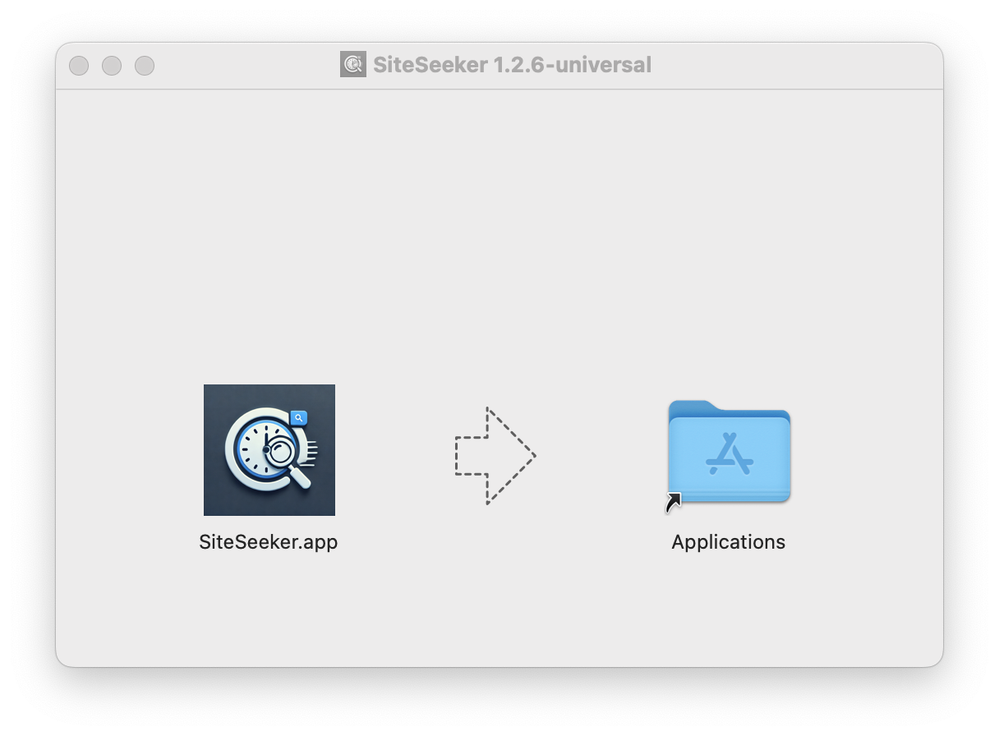
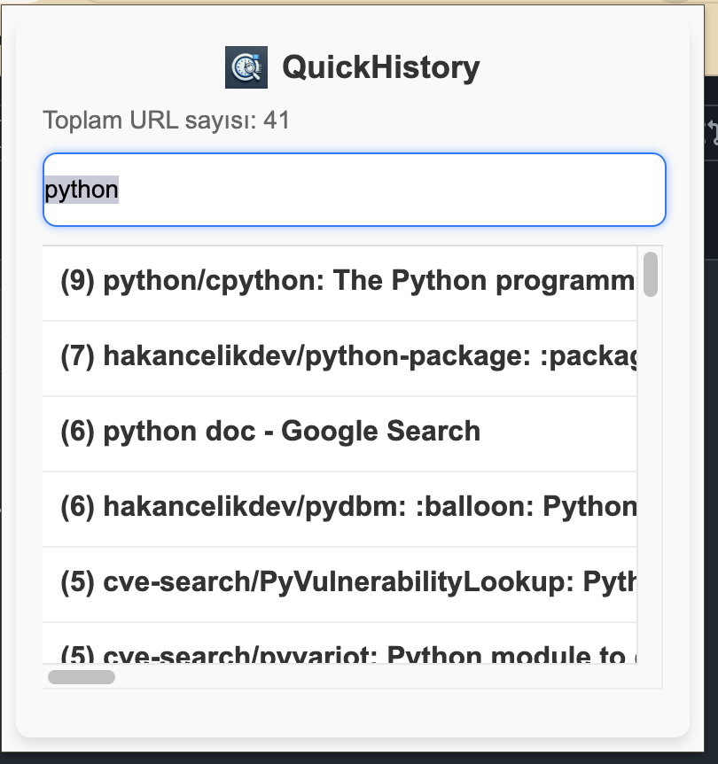
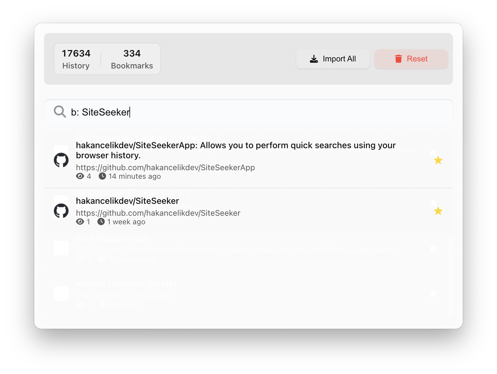

How to Use SiteSeeker
Get up and running in minutes
1
Install SiteSeeker
Download the DMG file and drag SiteSeeker to your Applications folder. The app will automatically handle updates.

2
Launch and Grant Permissions
Open SiteSeeker from Applications. The app will request access to your browser data - this is needed for search functionality.

3
Start Searching
Use the global shortcut ⌘+⇧+Space to open SiteSeeker anywhere. Type to search through your history and bookmarks.

4
Advanced Features
Use 'b:' prefix to search only bookmarks. Results are intelligently ranked by relevance and visit frequency.

Keyboard Shortcuts
⌘ + ⇧ + Space
Open SiteSeeker
↑ ↓
Navigate results
Enter
Open selected item
Esc
Close SiteSeeker